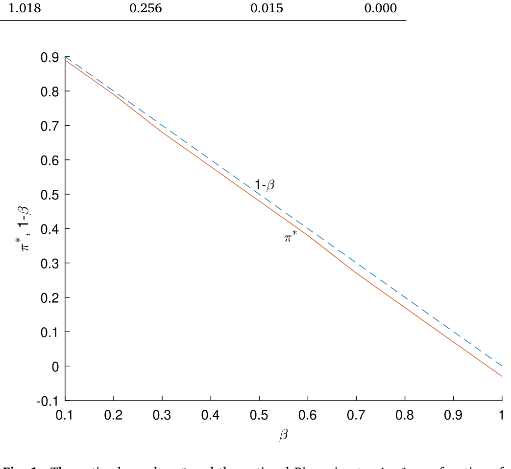
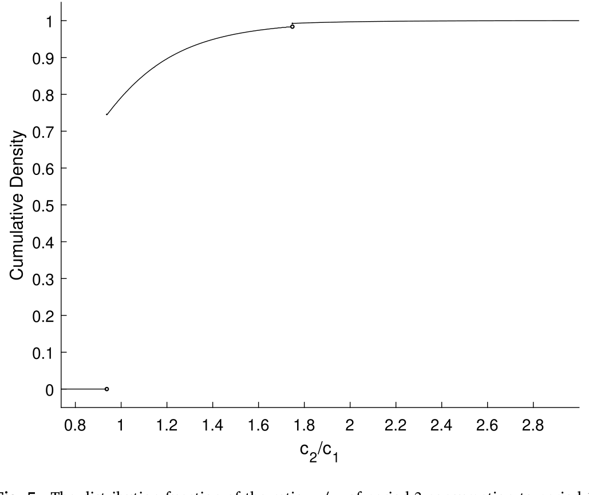
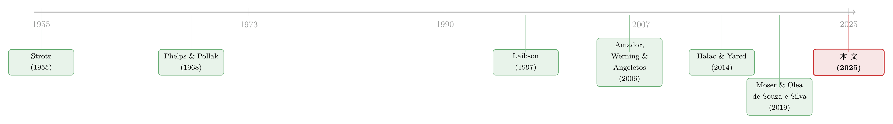

最优的「锁」：一笔退休金，应该有多难取出来？
本文读的是 Beshears, Choi, Clayton, Harris, Laibson, Madrian (2025, Journal of Financial Economics)：当一群「现在的我」总想花掉「将来的我」的钱时，社会最优的退休储蓄制度长什么样？答案出奇地简单——如果所有人的现时偏差程度相同，一个带 1−β 早取罚金的账户就够了；如果现时偏差因人而异（这才是现实），那么「一个完全活期 + 一个完全锁死」的两账户系统，几乎能逼出任意复杂的非线性机制所能达到的全部福利。而这，恰恰就是几乎所有中高收入国家正在运行的制度。
1 一个我们每天都在做、却做不好的决定
先讲一个你我都熟悉的场景。
你三十岁，账户里躺着一笔钱。理性的「你」知道，这笔钱里有相当一部分应该留到六十五岁退休时再花。可每个月发了工资，总有一个声音在耳边说：买吧、换吧、出去玩吧，未来的事未来再说。于是钱就这样一点点地、合情合理地流走了。
这不是道德故事，而是一个被行为经济学反复验证的现象：人对「当下」有一种系统性的偏爱。把这种偏爱写进效用函数，就是带有 现时偏差 (present bias) 的 拟双曲贴现 (quasi-hyperbolic discounting)——贴现序列不是标准的 \(\{1,\delta,\delta^2,\dots\}\)，而是 \(\{1,\beta\delta,\beta\delta^2,\dots\}\)。那个多出来的、对所有未来一视同仁打折的 \(\beta<1\)，就是现时偏差的度量，偏差程度等于 \(1-\beta\)（Phelps and Pollak, 1968；Laibson, 1997）。
现在把视角拉高。一个社会该如何为这样一群人设计退休储蓄制度？
这正是本文的出发点。美国的现实是：DC 账户（401(k)、IRA）的缴款几乎全靠自愿，而且取款相当容易——IRA 只要付 10% 的罚金，任何理由都能取。结果是惊人的「漏损 (leakage)」：根据 Argento et al. (2015)，55 岁以下人群每往退休账户里存 $1，同时就有 $0.40 从同一年龄段的账户里漏出来。媒体几乎一边倒地谴责这种漏损。
但作者一上来就提出了一个不那么舒服的问题：漏损一定是坏事吗？ 锁得越死，确实越能逼着人为退休存钱；可锁死也消灭了短期流动性的价值——万一你真的急需用钱呢？到底多少流动性才是社会最优的，这件事远没有「漏损=浪费」那么简单。
这篇文章的魅力在于：它不是又一篇「人们存得太少、快去多存点」的劝诫，而是一道严肃的机制设计题。它的结论既为现实制度做了辩护，又给出了改进的方向。
2 三个「自我」与一位不认同现时偏差的规划者
要把问题讲清楚，先要把人和政府的目标分开。
本文用的是一个 两期模型 (two-period model)：把 period 1 想成工作期、period 2 想成退休期。一个家庭有两个特征参数：随机的 偏好冲击 (taste shock) \(\theta\)（这一期我有多想花钱），以及现时偏差 \(\beta\)。家庭在第 1 期的效用是
$$\theta\, u_1(c_1) + \beta\,\delta\, u_2(c_2),$$
而 第 2 期的「自我」只剩 \(u_2(c_2)\)。
接着，一个自然的问题是：政府（社会规划者）的目标和家庭一样吗？不一样——而且差别恰恰是全文的命门。规划者对家庭怀有几乎相同的偏好，唯独不认同那个 \(\beta\)。也就是说，规划者眼中这个家庭的「正确」目标是
$$\theta\, u_1(c_1) + \delta\, u_2(c_2).$$
把这一点用带标注的方式摆出来，差别一目了然：
这里有个关键设定：家庭是 天真的 (naive)——他们根本意识不到自己有现时偏差（Strotz, 1955；O'Donoghue and Rabin, 1999a）。这条假设至关重要，因为它一举抹掉了两样东西：家庭自我承诺的动机，以及政府在某个假想「前置期」做筛选的可能。换句话说，如果不靠制度的硬约束，天真的人是不会自己把钱锁起来的。
最后还有信息结构：\(\theta\) 和 \(\beta\) 都是每个家庭的私人信息，规划者只知道它们在全社会的分布 \(F(\theta)\) 和 \(G(\beta)\)（并假设二者独立）。这就把问题逼进了 机制设计 (mechanism design) 的框架——你不能直接命令某个人存多少，你只能设计一套规则，让不同类型的人在其中自选出你想要的行为。
3 规划者的工具箱：账户、罚金，与一笔退回来的钱
规划者手里有什么工具？很简单：\(N\) 个账户，每个账户有一笔强制初始缴款 \(x_n\) 和一个早取罚金 \(\pi_n\)。如果你在第 1 期从账户 \(n\) 取出 \(\omega\) 元，实际到手只有 \((1-\pi_n)\,\omega\) 元。\(\pi_n=0\) 是完全活期账户，\(0<\pi_n<1\) 是部分锁定，\(\pi_n=1\) 则是完全锁死（取不出来）。
家庭的问题于是写成（Eq. 2–4）：
$$\max_{(\omega_n)_{n=1}^{N}}\ \theta\,u_1(c_1)+\beta\,\delta\,u_2(c_2),\qquad c_1=\sum_{n=1}^{N}(1-\pi_n)\,\omega_n,\quad c_2=R\sum_{n=1}^{N}\big(x_n-\omega_n\big).$$
而规划者要在满足全社会预算平衡（Eq. 6）的前提下，最大化加总的「正确」效用（Eq. 1）：
$$\iint \Big(\theta\,u_1\big(c_1(\theta,\beta)\big)+\delta\,u_2\big(c_2(\theta,\beta)\big)\Big)\,dF(\theta)\,dG(\beta).$$
但真正关键的一步，是本文相较于经典框架 Amador, Werning and Angeletos (2006)（下称 AWA）做的第一处改动：罚金不再被销毁，而是 一次性退还 (lump-sum rebate) 给所有家庭。这意味着账户之间、家庭之间是可以转移支付的——一个人交的早取罚金，会变成所有人的红利。第二处改动是允许 \(\beta\) 在人群中异质。这两处看似技术性的松绑，最终把结论推向了一个全新的方向。
为了给福利打分，作者搭了三层逐级放松约束的机制（福利依次不降）：
$$W_A \le W_N \le W_G \le W_R.$$
其中 \(W_A\) 是各家自管、无转移的「自给自足」基准；\(W_N\) 是 \(N\) 账户系统（最接近现实制度，也是分析重点）；\(W_G\) 是允许任意非线性预算集的「一般机制」，即理论上可行的社会最优；\(W_R\) 则是去掉单调性约束后的「放松问题」，只用来给福利定一个上界。整篇论文要回答的，就是那个朴素到近乎天真的问题：最朴素的 \(N\)（1 个、2 个账户），离最复杂的理论最优 \(W_G\)，到底差多远？
4 反转一：同质偏差下，一个账户、一个 1−β 就够了
先看最简单的情形：所有人的 \(\beta\) 都一样。
直觉上你可能觉得需要精巧的设计，但答案干净得让人意外——一个账户就够了，而且那个账户的最优早取罚金近似等于
$$\pi^\ast \simeq 1-\beta.$$
这其实是一个 庇古税 (Pigouvian tax)。为什么偏偏是 \(1-\beta\)？把家庭和规划者的一阶条件并排看就懂了。家庭取款的一阶条件是
$$\theta\,u_1'(c_1)\,(1-\pi)=\beta\,\delta R\,u_2'(c_2),$$
而规划者真正想要的跨期配置满足 \(\theta\,u_1'(c_1)=\delta R\,u_2'(c_2)\)。把后者代入前者，左右消去，你会发现两者重合的充要条件正是 \((1-\pi)=\beta\)，即 \(\pi=1-\beta\)。罚金恰好抵消了现时偏差那个楔子。 而因为罚金又被原样退回，这套制度不销毁任何资源，是一次纯粹的「纠偏」。
如下面的图 1 所示，作者数值求解出的最优罚金 \(\pi^\ast\) 与名义庇古税 \(1-\beta\) 几乎贴合——这正是「一个账户近似最优」的图像证据。

Figure 1: The optimal penalty𝜋∗and the notional Pigouvian tax1 −𝛽as a function of𝛽
这里藏着一个反直觉的副产品：在同质基准下，漏损根本不是社会问题。低 \(\beta\) 的人取款多、交的罚金也多，但这些罚金通过退还，恰好补贴了那些更有耐心、从财政外部性中受益的高 \(\beta\) 的人。一进一出，社会福利没有损失。媒体口中的「漏损危机」，在这个模型里被消解了。
5 反转二：偏差异质时，「全活期 + 全锁死」的两账户解
可现实里，人和人的自控力天差地别。一个统一的 1−β 罚金，对自控力强的人是多余的束缚，对自控力弱的人又远远不够——更何况规划者根本不知道谁是谁（\(\beta\) 是私人信息）。
于是问题变成了一道筛选题。然后，真正漂亮的结论出现了：当 \(\beta\) 的异质性足够大（作者视之为经验上的基准情形），社会最优被一个 两账户系统 极好地逼近——
- 一个完全活期账户（\(\pi=0\)）；
- 一个完全锁死、直到退休才能动的账户（\(\pi=1\)）。
注意，这里没有中间形态的部分锁定账户唱主角。机制设计的逻辑是：让两类人自我分选。自控力强（高 \(\beta\)）的人会把钱更多放在活期账户里享受灵活性；而那个带着大额强制缴款的完全锁死账户，则替自控力弱（低 \(\beta\)）的人兜住了底——这笔强制缴款大到足以「几乎熨平」工作期与退休期的消费，哪怕其他财富在工作期被花光也无妨。
代价的分配也很微妙：低 \(\beta\) 的人交掉了大部分早取罚金、承担了主要的福利成本，但锁死账户给他们带来的福利收益巨大；高 \(\beta\) 的人被迫把一部分钱从活期挪进锁死账户，损失了一点灵活性，但在所有校准情形里这点损失都很小。低 \(\beta\) 的收益压倒了高 \(\beta\) 的损失，社会净福利上升。
这个结论在形式上「呼应」了 AWA 的最优强制储蓄结果，但驱动力完全不同——AWA 靠的是承诺与灵活性的权衡，本文靠的是异质偏差 + 跨家庭转移。
那么，再加一个账户（第三个）能多榨出多少福利？作者发现：微乎其微。而且耐人寻味的是，这个第三账户被规划者优化出来的最优罚金约为 13%——几乎就是现实中 401(k) 那个 10% 早取罚金的翻版。一个从第一性原理推出来的部分锁定账户，长得和华尔街跑了几十年的制度一模一样。这大概是全文最让人会心一笑的地方。
6 把模型搬回美国：40% 的漏损，与「少锁了一半」的钱
光有理论还不够。作者用 \(N=3\) 的版本做了一次面向美国经济的 校准 (calibration)（Section 4.5），让模型去匹配一个典型家庭实际持有的完全锁死财富、部分锁定财富、完全活期财富的数量。
结果有两层。第一层是为现实辩护：校准出的漏损率约为 40%，与历史经验估计高度一致；现有账户的流动性属性（哪些锁死、哪些半锁、哪些活期）大体是最优的。也就是说，401(k) 那 10% 的罚金、Social Security 那种完全锁死的设计，方向上都对。
但第二层是敲响警钟：现有账户的额度分配并不最优。模型说，工作期积累的财富中，应当有 48% 更多被放进完全锁死的账户（包括 Social Security 权益）。换句话说，美国家庭把太多退休财富放进了 401(k) 这类「半锁」账户里，而它们的漏损在依赖度高的情况下并非无害。下面的图 5 展示了退休期与工作期消费之比的分布——它直观地刻画了在现行制度下，消费被「熨平」得有多不充分。

Figure 5: The distribution function of the ratio𝑐∕𝑐 of period-2consumption to period-1
（关于「行为偏差如何进入最优政策设计」这一更一般的命题，可参见《泡沫破灭之前，央行该不该出手？——把「情绪」写进金融危机的最优政策》；而关于「一块钱不再等于一块钱」、资金因账户而非同质化的视角，可对照《钱的温度：当「一块钱永远等于一块钱」不再成立》。）
7 文献脉络
这条线索的源头，要追溯到 Strotz (1955) 对动态效用最大化中「短视与不一致」的刻画——人会随时间推移而推翻自己过去的计划。Phelps and Pollak (1968) 把这种不一致写成了可操作的拟双曲贴现，Laibson (1997) 又以「金蛋」模型让它在现代消费-储蓄分析中落了地。
接着，一个自然的问题是：既然人会和未来的自己作对，制度该提供多少「承诺」、又该保留多少「灵活性」？AWA（Amador, Werning and Angeletos, 2006）给出了奠基性的答案——在同质现时偏差 + 异质偏好冲击下，最优制度是「一活期 + 一锁死」的强制最低储蓄。Halac and Yared (2014) 把这套权衡推广到持续性冲击，发现最优机制具有历史依赖性。
然后，到了与本文几乎同期、独立完成的 Moser and Olea de Souza e Silva (2019)：他们在不可观测的赚钱能力、不可观测的 \(\beta\) 与跨家庭转移下研究最优家长式储蓄政策，结论同样指向「比现状更多的强制储蓄」。
本文所处的位置，是把 AWA 的框架沿两个方向同时松绑——允许跨家庭转移、允许 \(\beta\) 异质——并第一次系统地证明：高度简化的（两、三账户、线性罚金）制度，能逼近任意复杂的非线性最优机制所达到的福利。

8 评论与延伸（Q&A + 研究方向）
(a) 几个可能的疑问
Q：为什么最优罚金偏偏是 1−β，而不是别的数？
因为现时偏差在家庭的跨期一阶条件里恰好以乘子 \(\beta\) 的形式压低了未来消费的权重。把家庭的 FOC \(\theta u_1'(1-\pi)=\beta\delta R u_2'\) 与规划者想要的 \(\theta u_1'=\delta R u_2'\) 对齐，唯一解就是 \(1-\pi=\beta\)。罚金 \(1-\beta\) 是一个把行为楔子精确抹平的庇古税。
Q：罚金「退还」这件事真有那么重要吗？
极其重要。这正是本文与 AWA 的分水岭。AWA 中政府收上来的资源必须销毁，于是漏损是纯损失；本文一次性退还，把罚金变成了跨家庭的再分配工具。正因如此，同质基准下「漏损不是社会问题」这个反直觉结论才成立。
Q：「天真」假设是不是太强了？换成「老练」会怎样？
这是全文最吃紧的假设。如果家庭是老练的（sophisticated），他们会有自我承诺的动机，也会在筛选机制里暴露出 \(\beta\)，结论很可能松动。作者坦承这一点，并援引经验文献（Ericson and Laibson, 2019 等）说明天真假设大体得到支持，但争议确实存在。
Q：两账户解和 AWA 的「最低强制储蓄」是同一回事吗？
形式上像，机制上不同。AWA 的驱动力是承诺-灵活性权衡；本文是异质偏差叠加跨家庭转移。同样的「一活期 + 一锁死」结构，在两篇论文里是被两套不同的经济力量推出来的——这恰恰说明该结构相当稳健。
Q：既然现实制度的流动性属性已近最优，这篇论文岂不是没什么政策含义？
恰恰相反。流动性属性对了，额度却错了：模型说完全锁死账户应当多承接约
48%的工作期财富。政策含义是「该锁的没锁够」，而非推倒重来。
Q：漏损到底是好是坏，本文给了一个确定答案吗？
没有，而且这正是它的高明处。在 401(k) 余额较小、退休财富主要靠完全锁死账户（DB/Social Security）承载时，漏损无害；可一旦社会过度依赖 401(k) 式半锁账户来积累退休财富，漏损就不再良性。结论是条件性的。
(b) 几个可能的研究问题与提案
-
从「天真」走向「老练」的连续谱。 【经济故事】现实中人既非全然天真也非完全老练。若把人群按老练程度排成连续谱，最优账户数与最优罚金会如何变化？两账户解还稳健吗？ 【可行性】中。理论上可在本文框架内引入「部分老练」参数 \(\hat\beta\) 做数值比较静态；难点在于校准 \(\hat\beta\) 的分布，需借助实验或调查数据。
-
政策变动作为漏损的准自然实验。 【经济故事】本文校准出
40%的漏损率，但这是均衡产物。若某次立法改变了 401(k) 早取罚金或硬性条件，能否用前后差异识别漏损对罚金的真实弹性，反过来检验 \(1-\beta\) 的庇古逻辑？ 【可行性】高。美国退休账户规则历经多次调整，可用 双重差分 (difference-in-differences, DiD) 或断点设计；行政税务数据（如 Argento 等所用）已被证明可得。 -
强制锁死账户作为长久期资产的「稳定需求底盘」。 【经济故事】完全锁死的退休资金天然偏好长久期、可持有到期的资产——这正是公司债、尤其长期信用债的天然买家。一个国家把多少财富强制锁进退休账户，可能通过需求侧影响信用市场的流动性与期限溢价。 【可行性】中。可比较强制储蓄制度差异大的国家（如澳大利亚 superannuation、新加坡 CPF）与其本币公司债市场的久期结构、流动性；识别难点在于剥离其他制度差异，需精细的跨国面板与工具变量。
-
外资持有人与「锁定型」需求的交互。 【经济故事】若本国退休资金被锁进长久期信用资产，挤出的短期流动性需求可能由外资填补——这会改变一国公司债的投资者结构与流动性对外部冲击的敏感度。 【可行性】中偏低。需要账户层面的持有人国籍数据与久期信息，识别强制储蓄→投资者结构的因果链条较难，但在持有人微观数据可得的市场（如部分欧洲国家）值得一试。
9 我的判断与参考文献
贡献。 这篇论文最漂亮的地方，是把一个本可以写得极其复杂的机制设计问题，收束到了「数一数需要几个账户」这样朴素的提问上，并给出了令人信服的「两个就够」的答案。它既为几乎所有中高收入国家的现行制度做了理论辩护（流动性属性近最优、13% 罚金对应现实 10%），又指出了可操作的改进方向（额度该多锁约 48%）。一个从第一性原理推出来、却长得像 401(k) 的账户，这种「理论照进现实」的瞬间是稀缺的。
对识别的担忧。 我最不放心的仍是 天真假设 和校准的脆弱性。结论中那些具体数字——40% 漏损、48% 应锁财富、13% 第三账户罚金——都依赖于效用函数形式、\(\beta\) 与 \(\theta\) 的分布假设，以及它们相互独立这一便利前提。一旦 \(\beta\) 与 \(\theta\) 相关（越没耐心的人偏好冲击越大，并非不可能），筛选机制的逻辑就会被扰动。这些是校准结论，不是因果估计，读者应当如此对待。
后续想看的。 我最想看到的是把这套规范分析与真实的政策变动对接：用一次罚金或硬约束的立法变化，去经验性地识别漏损对罚金的弹性，从外部检验 1−β 庇古逻辑的量级。其次，作为做信用市场的人，我更好奇强制锁死的退休资金如何在需求侧重塑长久期公司债的流动性与定价——那才是把这篇「家庭储蓄」的论文，真正接进资产市场的那一步。
参考文献
- Amador, Manuel, Werning, Iván, Angeletos, George-Marios (2006). Commitment vs. flexibility. Econometrica 74(2), 365–396.
- Beshears, John, Choi, James J., Clayton, Christopher, Harris, Christopher, Laibson, David, Madrian, Brigitte C. (2025). Optimal illiquidity. Journal of Financial Economics 165, 103996.
- Ericson, Keith Marzilli, Laibson, David (2019). Intertemporal choice. In Handbook of Behavioral Economics: Applications and Foundations 1, Vol. 2, Elsevier, pp. 1–67.
- Halac, Marina, Yared, Pierre (2014). Fiscal rules and discretion under persistent shocks. Econometrica 82(5), 1557–1614.
- Laibson, David (1997). Golden eggs and hyperbolic discounting. Quarterly Journal of Economics 112(2), 443–478.
- Moser, Christian, Olea de Souza e Silva, Pedro (2019). Optimal paternalistic savings policies. Columbia Business School Research Paper (17–51).
- O'Donoghue, Ted, Rabin, Matthew (1999a). Doing it now or later. American Economic Review 89(1), 103–124.
- Phelps, Edmund S., Pollak, Robert A. (1968). On second-best national saving and game-equilibrium growth. Review of Economic Studies 35(2), 185–199.
- Strotz, R.H. (1955). Myopia and inconsistency in dynamic utility maximization. Review of Economic Studies 23(3), 165–180.